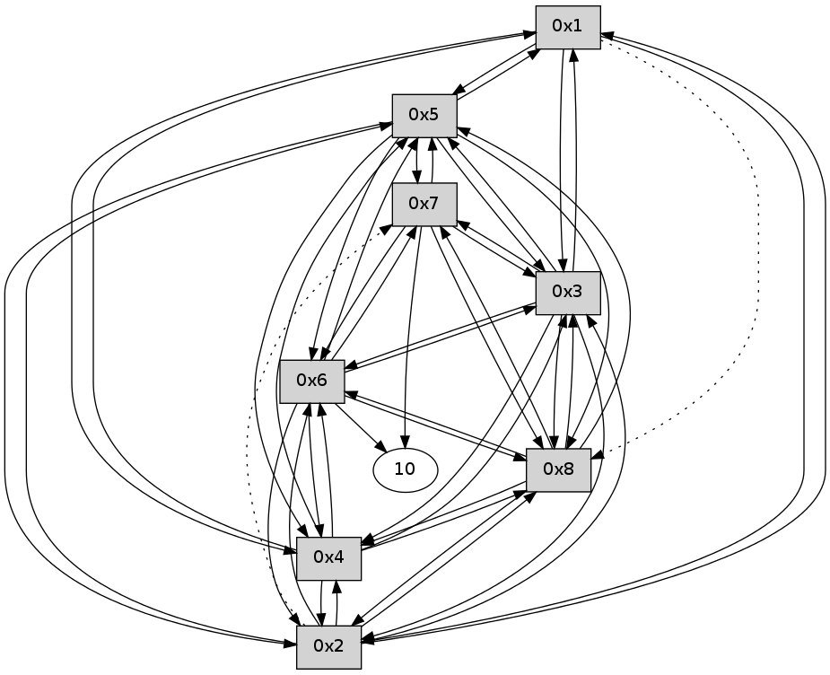

>> << IDX [start] -100 -25 -5 +0 +5 +25 +100 [125.436090946]
 Previous packets
120.065822 [Hello(3): seq=23 sym=1,2,7,5,6,8,4 sysInfo= stat=1:7,0,0,0/2:4,0,0,0/7:4,0,0,0/5:5,0,0,0/6:5,0,0,0/8:6,0,0,0/4:6,0,0,0]
120.072764 [Hello(4): seq=23 sym=1,2,5,6,3,8 sysInfo= stat=1:6,0,0,0/2:5,0,0,0/5:5,0,0,0/6:5,0,0,0/3:7,0,0,0/8:6,0,0,0]
120.112727 [Hello(7): seq=23 sym=10,5,6,8,3 sysInfo= stat=10:5,0,0,0/5:4,0,0,0/6:6,0,0,0/8:6,0,0,0/3:6,0,0,0]
120.115862 [Hello(2): seq=23 sym=1,5,3,8,4,6 asym=7 sysInfo= stat=1:6,0,0,0/5:5,0,0,0/3:7,0,0,0/8:6,0,0,0/4:6,0,0,0/6:3,0,0,0/7:4,0,0,0]
120.127753 [Hello(8): seq=23 sym=2,7,5,6,3,4 sysInfo= stat=2:5,0,0,0/7:5,0,0,0/5:4,0,0,0/6:6,0,0,0/3:5,0,0,0/4:6,0,0,0]
120.169087 [Hello(5): seq=23 sym=1,2,7,6,3,8,4 sysInfo= stat=1:7,0,0,0/2:5,0,0,0/7:5,0,0,0/6:5,0,0,0/3:7,0,0,0/8:7,0,0,0/4:6,0,0,0]
120.172800 [Hello(6): seq=23 sym=10,7,5,3,8,4,2 sysInfo= stat=10:5,0,0,0/7:5,0,0,0/5:3,0,0,0/3:6,0,0,0/8:7,0,0,0/4:5,0,0,0/2:14,0,0,0]
----------------------------------------------------------------------
120.707272 beacon01(11f6) #0 coord=01,02,03,04,05,06,07,08,0a,09 cycle=688.0ms assoc
-- color-indic=0 64 07 ba
120.717432 beacon02(11f6) #0 coord=01,02,03,04,05,06,07,08,0a,09 cycle=688.0ms assoc 64 94 8b
120.727407 beacon03(11f6) #0 coord=01,02,03,04,05,06,07,08,0a,09 cycle=688.0ms assoc 64 ee c6
120.737406 beacon04(11f6) #0 coord=01,02,03,04,05,06,07,08,0a,09 cycle=688.0ms assoc 64 99 2c
120.747409 beacon05(11f6) #0 coord=01,02,03,04,05,06,07,08,0a,09 cycle=688.0ms assoc 64 e3 61
120.757408 beacon06(11f6) #0 coord=01,02,03,04,05,06,07,08,0a,09 cycle=688.0ms assoc 64 6d b6
120.767408 beacon07(11f6) #0 coord=01,02,03,04,05,06,07,08,0a,09 cycle=688.0ms assoc 64 17 fb
120.777413 beacon08(11f6) #0 coord=01,02,03,04,05,06,07,08,0a,09 cycle=688.0ms assoc 64 92 6a
120.901165 [Hello(1): seq=24 sym=5,3,2,4 asym=8 sysInfo= stat=5:6,0,0,0/3:7,0,0,0/2:4,0,0,0/4:5,0,0,0/8:7,0,0,0]
----------------------------------------------------------------------
121.495406 beacon01(11f6) #0 coord=01,02,03,04,05,06,07,08,0a,09 cycle=688.0ms assoc
-- color-indic=0 64 c3 b4
121.505566 beacon02(11f6) #0 coord=01,02,03,04,05,06,07,08,0a,09 cycle=688.0ms assoc 64 50 85
121.515541 beacon03(11f6) #0 coord=01,02,03,04,05,06,07,08,0a,09 cycle=688.0ms assoc 64 2a c8
121.525541 beacon04(11f6) #0 coord=01,02,03,04,05,06,07,08,0a,09 cycle=688.0ms assoc 64 5d 22
121.535543 beacon05(11f6) #0 coord=01,02,03,04,05,06,07,08,0a,09 cycle=688.0ms assoc 64 27 6f
121.545542 beacon06(11f6) #0 coord=01,02,03,04,05,06,07,08,0a,09 cycle=688.0ms assoc 64 a9 b8
121.555542 beacon07(11f6) #0 coord=01,02,03,04,05,06,07,08,0a,09 cycle=688.0ms assoc 64 d3 f5
121.565548 beacon08(11f6) #0 coord=01,02,03,04,05,06,07,08,0a,09 cycle=688.0ms assoc 64 56 64
121.603406 [Hello(8): seq=24 sym=2,7,5,6,3,4 sysInfo= stat=2:5,0,0,0/7:5,0,0,0/5:5,0,0,0/6:7,0,0,0/3:5,0,0,0/4:6,0,0,0]
121.607377 [Hello(4): seq=24 sym=1,2,5,6,3,8 sysInfo= stat=1:7,0,0,0/2:6,0,0,0/5:6,0,0,0/6:6,0,0,0/3:7,0,0,0/8:7,0,0,0]
121.609698 [Hello(5): seq=24 sym=1,2,7,6,3,8,4 sysInfo= stat=1:8,0,0,0/2:5,0,0,0/7:5,0,0,0/6:6,0,0,0/3:7,0,0,0/8:8,0,0,0/4:6,0,0,0]
121.649437 [Hello(2): seq=24 sym=1,5,3,8,4,6 asym=7 sysInfo= stat=1:7,0,0,0/5:7,0,0,0/3:7,0,0,0/8:8,0,0,0/4:7,0,0,0/6:4,0,0,0/7:5,0,0,0]
121.725022 [Hello(6): seq=24 sym=10,7,5,3,8,4,2 sysInfo= stat=10:6,0,0,0/7:5,0,0,0/5:5,0,0,0/3:6,0,0,0/8:8,0,0,0/4:6,0,0,0/2:15,0,0,0]
121.732393 [Hello(7): seq=24 sym=10,5,6,8,3 sysInfo= stat=10:6,0,0,0/5:6,0,0,0/6:8,0,0,0/8:8,0,0,0/3:6,0,0,0]
121.745074 [Hello(3): seq=24 sym=1,2,7,5,6,8,4 sysInfo= stat=1:8,0,0,0/2:6,0,0,0/7:6,0,0,0/5:7,0,0,0/6:7,0,0,0/8:8,0,0,0/4:8,0,0,0]
----------------------------------------------------------------------
122.283544 beacon01(11f6) #0 coord=01,02,03,04,05,06,07,08,0a,09 cycle=688.0ms assoc
-- color-indic=0 64 7f b1
122.293717 beacon02(11f6) #0 coord=01,02,03,04,05,06,07,08,0a,09 cycle=688.0ms assoc 64 ec 80
122.303680 beacon03(11f6) #0 coord=01,02,03,04,05,06,07,08,0a,09 cycle=688.0ms assoc 64 96 cd
122.313679 beacon04(11f6) #0 coord=01,02,03,04,05,06,07,08,0a,09 cycle=688.0ms assoc 64 e1 27
122.323681 beacon05(11f6) #0 coord=01,02,03,04,05,06,07,08,0a,09 cycle=688.0ms assoc 64 9b 6a
122.333680 beacon06(11f6) #0 coord=01,02,03,04,05,06,07,08,0a,09 cycle=688.0ms assoc 64 15 bd
122.343682 beacon07(11f6) #0 coord=01,02,03,04,05,06,07,08,0a,09 cycle=688.0ms assoc 64 6f f0
122.353685 beacon08(11f6) #0 coord=01,02,03,04,05,06,07,08,0a,09 cycle=688.0ms assoc 64 ea 61
122.448730 [Hello(1): seq=25 sym=5,3,2,4 asym=8 sysInfo= stat=5:7,0,0,0/3:8,0,0,0/2:5,0,0,0/4:6,0,0,0/8:8,0,0,0]
----------------------------------------------------------------------
123.071680 beacon01(11f6) #0 coord=01,02,03,04,05,06,07,08,0a,09 cycle=688.0ms assoc
-- color-indic=0 64 4b a9
123.081851 beacon02(11f6) #0 coord=01,02,03,04,05,06,07,08,0a,09 cycle=688.0ms assoc 64 d8 98
123.091815 beacon03(11f6) #0 coord=01,02,03,04,05,06,07,08,0a,09 cycle=688.0ms assoc 64 a2 d5
123.101815 beacon04(11f6) #0 coord=01,02,03,04,05,06,07,08,0a,09 cycle=688.0ms assoc 64 d5 3f
123.111815 beacon05(11f6) #0 coord=01,02,03,04,05,06,07,08,0a,09 cycle=688.0ms assoc 64 af 72
123.121816 beacon06(11f6) #0 coord=01,02,03,04,05,06,07,08,0a,09 cycle=688.0ms assoc 64 21 a5
123.131816 beacon07(11f6) #0 coord=01,02,03,04,05,06,07,08,0a,09 cycle=688.0ms assoc 64 5b e8
123.141821 beacon08(11f6) #0 coord=01,02,03,04,05,06,07,08,0a,09 cycle=688.0ms assoc 64 de 79
123.195669 [Hello(3): seq=25 sym=1,2,7,5,6,8,4 sysInfo= stat=1:9,0,0,0/2:6,0,0,0/7:6,0,0,0/5:7,0,0,0/6:7,0,0,0/8:8,0,0,0/4:8,0,0,0]
123.201326 [Hello(8): seq=25 sym=2,7,5,6,3,4 sysInfo= stat=2:6,0,0,0/7:6,0,0,0/5:6,0,0,0/6:8,0,0,0/3:7,0,0,0/4:7,0,0,0]
123.215692 [Hello(6): seq=25 sym=10,7,5,3,8,4,2 sysInfo= stat=10:6,0,0,0/7:6,0,0,0/5:5,0,0,0/3:8,0,0,0/8:9,0,0,0/4:6,0,0,0/2:15,0,0,0]
123.219907 [Hello(4): seq=25 sym=1,2,5,6,3,8 sysInfo= stat=1:8,0,0,0/2:7,0,0,0/5:7,0,0,0/6:7,0,0,0/3:9,0,0,0/8:8,0,0,0]
123.243927 [Hello(7): seq=25 sym=10,5,6,8,3 sysInfo= stat=10:6,0,0,0/5:6,0,0,0/6:9,0,0,0/8:9,0,0,0/3:8,0,0,0]
123.297394 [Hello(2): seq=25 sym=1,5,3,8,4,6 asym=7 sysInfo= stat=1:8,0,0,0/5:7,0,0,0/3:9,0,0,0/8:9,0,0,0/4:8,0,0,0/6:6,0,0,0/7:7,0,0,0]
123.314073 [Hello(5): seq=25 sym=1,2,7,6,3,8,4 sysInfo= stat=1:9,0,0,0/2:7,0,0,0/7:7,0,0,0/6:8,0,0,0/3:9,0,0,0/8:9,0,0,0/4:8,0,0,0]
----------------------------------------------------------------------
123.859816 beacon01(11f6) #0 coord=01,02,03,04,05,06,07,08,0a,09 cycle=688.0ms assoc
-- color-indic=0 64 f7 ac
123.869981 beacon02(11f6) #0 coord=01,02,03,04,05,06,07,08,0a,09 cycle=688.0ms assoc 64 64 9d
123.879952 beacon03(11f6) #0 coord=01,02,03,04,05,06,07,08,0a,09 cycle=688.0ms assoc 64 1e d0
123.889951 beacon04(11f6) #0 coord=01,02,03,04,05,06,07,08,0a,09 cycle=688.0ms assoc 64 69 3a
123.899952 beacon05(11f6) #0 coord=01,02,03,04,05,06,07,08,0a,09 cycle=688.0ms assoc 64 13 77
123.909952 beacon06(11f6) #0 coord=01,02,03,04,05,06,07,08,0a,09 cycle=688.0ms assoc 64 9d a0
123.919953 beacon07(11f6) #0 coord=01,02,03,04,05,06,07,08,0a,09 cycle=688.0ms assoc 64 e7 ed
123.929956 beacon08(11f6) #0 coord=01,02,03,04,05,06,07,08,0a,09 cycle=688.0ms assoc 64 62 7c
123.994655 [Hello(1): seq=26 sym=5,3,2,4 asym=8 sysInfo= stat=5:8,0,0,0/3:9,0,0,0/2:6,0,0,0/4:7,0,0,0/8:9,0,0,0]
----------------------------------------------------------------------
124.647953 beacon01(11f6) #0 coord=01,02,03,04,05,06,07,08,0a,09 cycle=688.0ms assoc
-- color-indic=0 64 33 a2
124.658107 beacon02(11f6) #0 coord=01,02,03,04,05,06,07,08,0a,09 cycle=688.0ms assoc 64 a0 93
124.668088 beacon03(11f6) #0 coord=01,02,03,04,05,06,07,08,0a,09 cycle=688.0ms assoc 64 da de
124.678088 beacon04(11f6) #0 coord=01,02,03,04,05,06,07,08,0a,09 cycle=688.0ms assoc 64 ad 34
124.688089 beacon05(11f6) #0 coord=01,02,03,04,05,06,07,08,0a,09 cycle=688.0ms assoc 64 d7 79
124.698089 beacon06(11f6) #0 coord=01,02,03,04,05,06,07,08,0a,09 cycle=688.0ms assoc 64 59 ae
124.708089 beacon07(11f6) #0 coord=01,02,03,04,05,06,07,08,0a,09 cycle=688.0ms assoc 64 23 e3
124.718092 beacon08(11f6) #0 coord=01,02,03,04,05,06,07,08,0a,09 cycle=688.0ms assoc 64 a6 72
124.783957 [Hello(5): seq=26 sym=1,2,7,6,3,8,4 sysInfo= stat=1:10,0,0,0/2:7,0,0,0/7:7,0,0,0/6:8,0,0,0/3:9,0,0,0/8:9,0,0,0/4:8,0,0,0]
124.794953 [Hello(6): seq=26 sym=10,7,5,3,8,4,2 sysInfo= stat=10:7,0,0,0/7:7,0,0,0/5:6,0,0,0/3:8,0,0,0/8:9,0,0,0/4:6,0,0,0/2:15,0,0,0]
124.833927 [Hello(8): seq=26 sym=2,7,5,6,3,4 sysInfo= stat=2:7,0,0,0/7:7,0,0,0/5:7,0,0,0/6:10,0,0,0/3:7,0,0,0/4:8,0,0,0]
124.849633 [Hello(3): seq=26 sym=1,2,7,5,6,8,4 sysInfo= stat=1:10,0,0,0/2:7,0,0,0/7:7,0,0,0/5:8,0,0,0/6:9,0,0,0/8:10,0,0,0/4:9,0,0,0]
124.872898 [Hello(7): seq=26 sym=10,5,6,8,3 sysInfo= stat=10:7,0,0,0/5:7,0,0,0/6:10,0,0,0/8:10,0,0,0/3:9,0,0,0]
124.891621 [Hello(4): seq=26 sym=1,2,5,6,3,8 sysInfo= stat=1:9,0,0,0/2:8,0,0,0/5:9,0,0,0/6:9,0,0,0/3:10,0,0,0/8:9,0,0,0]
124.895944 [Hello(2): seq=26 sym=1,5,3,8,4,6 asym=7 sysInfo= stat=1:9,0,0,0/5:8,0,0,0/3:10,0,0,0/8:10,0,0,0/4:8,0,0,0/6:7,0,0,0/7:8,0,0,0]